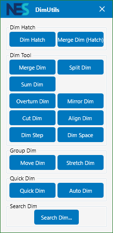
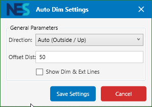
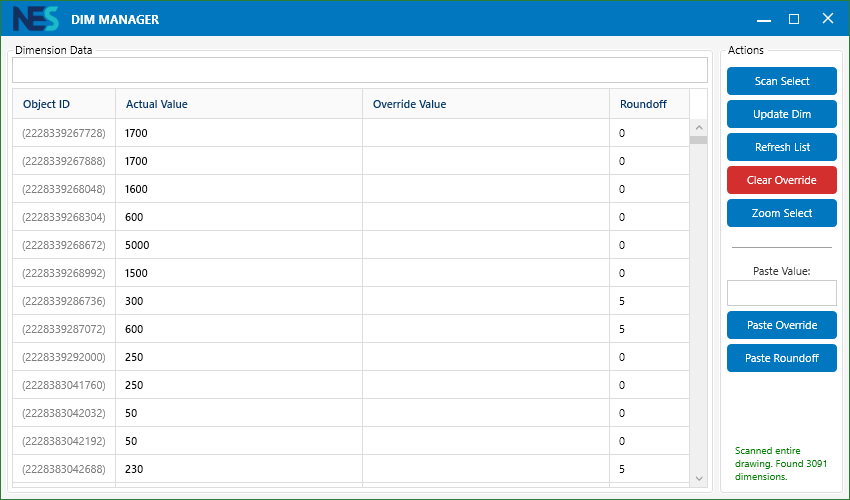

NES_DIMTOOL
Giải pháp giải quyết triệt để các bài toán đo đạc phức tạp nhất trong AutoCAD Shopdrawing, tối ưu tốc độ và độ chính xác.

Trung tâm điều khiển & Tính năng lõi
"Quản lý toàn bộ hệ thống đo đạc qua một giao diện Palette thông minh."
1. NES_DIMTOOL Palette
Bảng công cụ hỗ trợ chế độ luôn nổi (Modeless). Giúp kỹ sư vừa thao tác CAD vừa chọn tính năng đo đạc nhanh chóng mà không cần nhớ hàng chục lệnh rời rạc.
Tính năng Ưu tiên
NES_Sumdim (Gộp tổng)
Gộp nhiều đoạn Dim thành phần để tạo ra 1 đoạn Dim tổng bao quát ranh giới một cách nhanh nhất.
NES_MirrorDim (Đối xứng)
Đối xứng toàn diện thuộc tính Dimension, xử lý triệt để lỗi chữ bị ngược khi xoay bản vẽ.

Hình 1: Bảng điều khiển trung tâm NES_DIMTOOL
Thống kê các lệnh Dimension
"Bộ công cụ chuyên sâu từ tạo mới đến hiệu chỉnh nâng cao."
2.1. NES_DimHatch
Dim đối tượng Hatch - Thường dùng cho các loại hatch gạch lát.
2.2. NES_MergeDimHatch
Tự động dồn các đoạn Dim giống nhau thành định dạng ghi chú: Số lượng x Kích thước = <> (Ví dụ: 3x600=1800).
2.3. Merge, Split & Sum
- • Merge Dim: Gộp nhiều đoạn thành 1 đoạn.
- • Split Dim: Chia đôi đoạn Dim tại điểm pick bất kỳ.
- • Sum Dim: Gộp các đoạn thành phần tạo Dim tổng.
2.4. OverTurn & Mirror
DimOverTurn: Đảo hướng đọc chữ.
MirrorDim: Lật đối xứng toàn diện thuộc tính.
2.5. Hiệu chỉnh & Step
- • Cut/Align: Cắt chân & Gióng hàng thẳng tuyệt đối.
- • DimStep: Tính bậc thang (Ví dụ: 21x152.38=3200).
- • DimSpace: Tự giãn khoảng cách hàng Dim theo tỷ lệ (mặc định 2.5).
2.6. Move & Stretch Chain
Di chuyển hoặc kéo giãn cả một chuỗi Dim nhiều hàng mà vẫn giữ nguyên liên kết cấu trúc của group.
2.7. NES_QuickDim (Ghi theo đường cắt)
Hệ thống tự tìm tất cả giao cắt của "đường cắt ảo" với các đối tượng khác. Bạn có thể kéo chuột (Jig) để chọn vị trí đặt hàng Dim trực quan.
2.8. NES_AutoDim (Tự động hàng loạt)

Tự động ghi Dim song song cho hàng loạt Line/Polyline. Hỗ trợ giao diện tùy chỉnh Offset và Direction.
2.9. Trình quản lý NES_SearchDim
"Công cụ kiểm soát dữ liệu Dimension tập trung và hiệu quả nhất."

Measurement
Giá trị thực tế AutoCAD đo được từ đối tượng.
Override Text
Nội dung văn bản người dùng đã ghi đè lên số đo thật.
Round Off
Giá trị làm tròn đơn vị đang áp dụng cho đường Dim.
Hệ thống Lệnh Tác vụ
Chọn vùng quét để giới hạn phạm vi quản lý thay vì load toàn bộ bản vẽ.
Ghi đè ngược: Lưu mọi thay đổi từ bảng dữ liệu (Override/Roundoff) trực tiếp xuống đối tượng trên AutoCAD.
Đồng bộ lại bảng dữ liệu với trạng thái mới nhất của bản vẽ.
Xóa bỏ nội dung ghi đè, trả Dimension về giá trị đo thật ban đầu.
Gán văn bản ghi đè hàng loạt cho nhiều dòng được chọn bằng giá trị tại ô Value to Paste.
Điều chỉnh độ làm tròn hàng loạt (VD: làm tròn đến 5, 10) cho các đường Dim đang chọn.
Tự động phóng đến vị trí đường Dim đang được chọn trong danh sách.